加载内核与特权级
加载内核
生成C语言程序的过程是这样的。先将源程序编译成目标文件（由c代码变成汇编代码后，再由汇编代码生成二进制的目标文件（待重定位文件）），再将目标文件链接成二进制可执行文件
1
2
3
4
5
6
7
8
9
10
11
| % 位于kernel/main.c
int main(void) {
while(1);
return 0;
}
% gcc编译该程序的参数：gcc -c -o kernel/main.o kernel/main.c
% -c的作用是编译、汇编到目标代码，不进行链接，也就是直接生成目标文件。
% -o的作用是将输出的文件以指定文件名来存储，有同名文件存在时直接覆盖。
% ld kernel/main.o -Ttext 0xc0001500 -e main -o kernel/kernel.bin
% -Ttext 指定起始虚拟地址为0xc0001500
% -e指定程序入口
|
每个程序都是单独存在的，所以需要程序的入口地址信息与程序绑定，在原先的纯二进制可执行文件加上新的文件头，就形成了。gcc编译器生成的是elf文件格式（Executable and Linkable Format），可执行链接格式，该文件可直接运行。
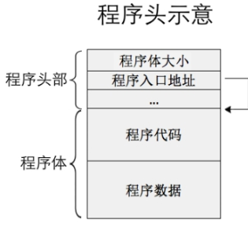
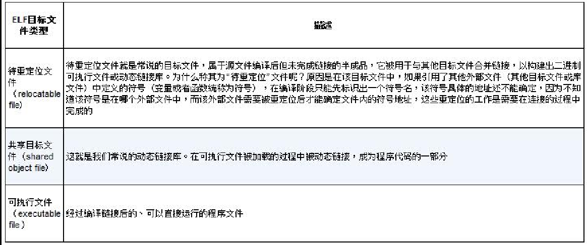
程序中有段segment（数据段、代码段）和节section组成，多个节经过链接被合并成一个段，段和节的信息也是用header描述，程序头是program header、节头是section header。
使用程序头表和节头表来汇总程序头和节头，段相当于程序，所以将描述段信息的表说成program header table，通过ELF header来描述程序头表和节头表的大小及位置信息
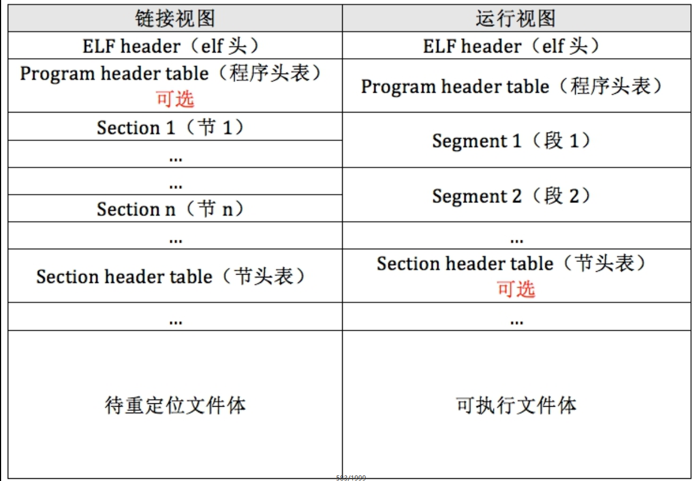
ELF header中的数据类型
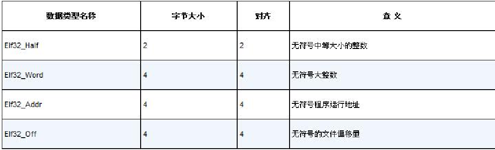
elf header 结构
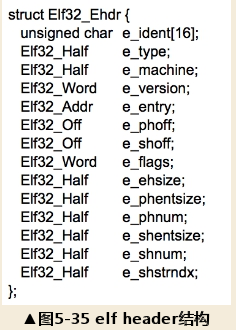
program header结构
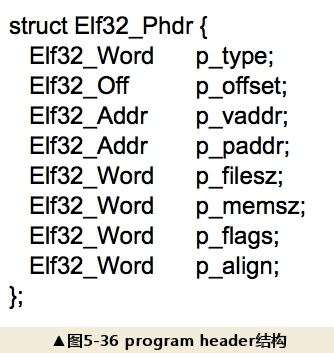
将kernel/kernel.bin写入磁盘dd if=/root/bochs-2.7/kernel/kernel.bin of=/root/bochs-2.7/hd60M.img bs=512 count=200 seek=9 conv=notrunc，从第9个扇区开始写，写入200个
loader.S添加两项：
- 加载内核，把内核文件加载到内存缓冲区
- 初始化内核，需要在分页后，将加载进来的elf内核文件安置到相应的虚拟内存地址，然后跳过去执行，loader的工作结束
内核在内存中有两份拷贝：一份是elf格式的原文件kernel.bin，加载到高地址；另一份是loader解析elf格式的kernel.bin后在内存中生成的内核映像，即真正运行的内核，加载到低地址。
loader.S详细代码：https://github.com/fuujiro/OS_lab/blob/master/code/c5/c/boot/loader.S
加载kernel，将其写入内存中
1
2
3
4
5
6
7
8
9
10
11
12
13
14
15
16
17
18
19
20
21
22
23
24
25
26
27
28
29
30
31
32
33
34
35
36
37
38
39
40
41
42
43
44
45
46
47
48
49
50
51
52
53
54
55
56
57
58
59
60
61
62
| ;在开启分页后,用gdt新的地址重新加载
lgdt [gdt_ptr] ; 重新加载
;;;;;;;;;;;;;;;;;;;;;;;;;;;; 此时不刷新流水线也没问题 ;;;;;;;;;;;;;;;;;;;;;;;;
;由于一直处在32位下,原则上不需要强制刷新,经过实际测试没有以下这两句也没问题.
;但以防万一，还是加上啦，免得将来出来莫句奇妙的问题.
jmp SELECTOR_CODE:enter_kernel ;强制刷新流水线,更新gdt
enter_kernel:
;;;;;;;;;;;;;;;;;;;;;;;;;;;;;;;;;;;;;;;;;;;;;;;;;;;;;;;;;;;;;;;;;;;;;;;;;;;;;;;;
call kernel_init
mov esp, 0xc009f000 ;为了对齐4kb整页，栈底
jmp KERNEL_ENTRY_POINT ; 用地址0x1500访问测试，结果ok
;----------------- 将kernel.bin中的segment拷贝到编译的地址 -----------
kernel_init: ;将kernel.bin中的段拷贝到各段自己被编译的虚拟地址处，将这些段单独提取到内存中
xor eax, eax
xor ebx, ebx ;ebx记录程序头表地址
xor ecx, ecx ;cx记录程序头表中的program header数量
xor edx, edx ;dx 记录program header尺寸,即e_phentsize
mov dx, [KERNEL_BIN_BASE_ADDR + 42] ; 偏移文件42字节处的属性是e_phentsize,表示program header段头大小
mov ebx, [KERNEL_BIN_BASE_ADDR + 28] ; 偏移文件开始部分28字节的地方是e_phoff,表示第1 个program header在文件中的偏移量，程序头表在文件中的偏移量
; 其实该值是0x34,不过还是谨慎一点，这里来读取实际值
add ebx, KERNEL_BIN_BASE_ADDR ;程序头表的物理地址，作为程序头表的基址
mov cx, [KERNEL_BIN_BASE_ADDR + 44] ; 偏移文件开始部分44字节的地方是e_phnum,表示有几个program header，即程序头的数量
.each_segment:
cmp byte [ebx + 0], PT_NULL ; 若p_type等于 PT_NULL,说明此program header未使用。
je .PTNULL
; 程序中的段通过mem_cpy函数复制到段自身的虚拟地址处
;为函数memcpy压入参数,参数是从右往左依然压入.函数原型类似于 memcpy(dst,src,size)
push dword [ebx + 16] ; program header中偏移16字节的地方是p_filesz,压入函数memcpy的第三个参数:size
mov eax, [ebx + 4] ; 距程序头偏移量为4字节的位置是p_offset
add eax, KERNEL_BIN_BASE_ADDR ; 加上kernel.bin被加载到的物理地址,eax为该段的物理地址
push eax ; 压入函数memcpy的第二个参数:源地址
push dword [ebx + 8] ; 压入函数memcpy的第一个参数:目的地址,偏移程序头8字节的位置是p_vaddr，这就是目的地址
call mem_cpy ; 调用mem_cpy完成段复制
add esp,12 ; 清理栈中压入的三个参数
.PTNULL:
add ebx, edx ; edx为program header大小,即e_phentsize,在此ebx指向下一个program header
loop .each_segment
ret
;---------- 逐字节拷贝 mem_cpy(dst,src,size) ------------
;输入:栈中三个参数(dst,src,size)
;输出:无
;---------------------------------------------------------
mem_cpy:
cld ;用于清除方向标志，让数据的源地址和目的地址逐渐增大
push ebp
mov ebp, esp
push ecx ; rep指令用到了ecx，但ecx对于外层段的循环还有用，故先入栈备份
mov edi, [ebp + 8] ; dst
mov esi, [ebp + 12] ; src
mov ecx, [ebp + 16] ; size
rep movsb ; 逐字节拷贝，repeat，每执行一次，ecx减1，直到ecx=0
;movs=move string,后面的b-byte-1字节,w-word-2字节,d-dword-4字节
;恢复环境
pop ecx
pop ebp
ret
|
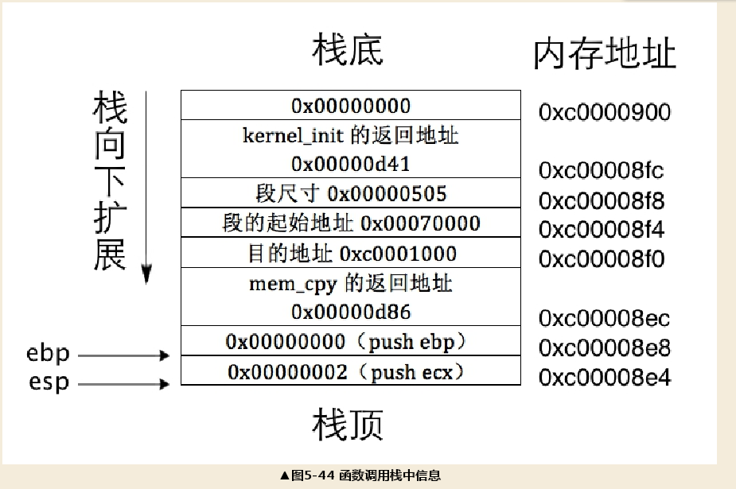
文件0x500-0x9fbff内存布局：
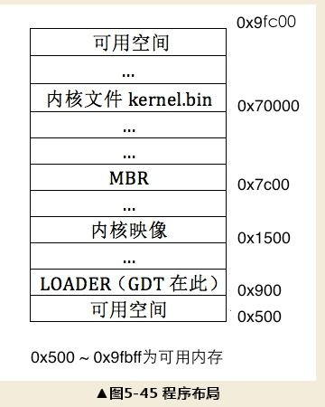
特权级
简介
对象可以分为两部分：访问者和受访者。访问者是动态的，具有能动性，特权级可以变，主动访问资源；受访者是静态的，是被访问的资源，特权级不能变。
建立特权机制就是通过特权来检查合法性，实际上就是检查访问者的特权级和受访者的特权级是否匹配。
特权级分为四个级别：0-1-2-3，数字越大，特权能力越大，0级最大。0级是操作系统内核所在的特权级。
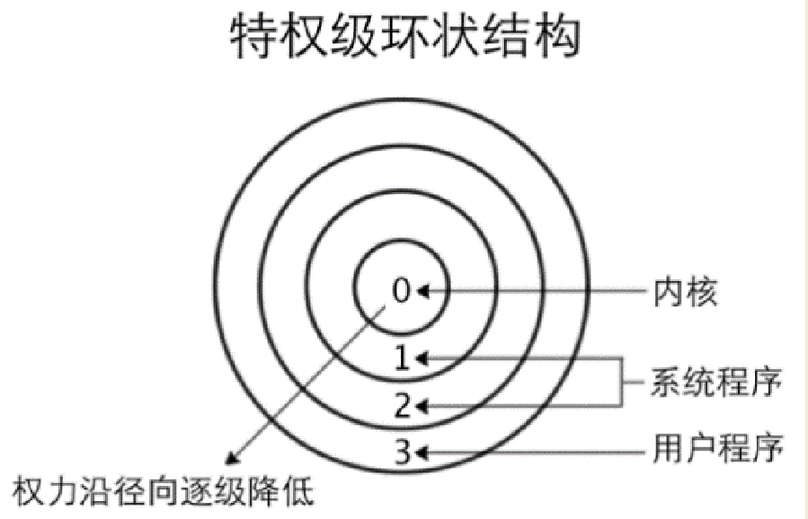
1级与2级一般是虚拟机、驱动程序；低3级一般是用户程序。
TSS
TSS即Task State Segment，任务状态段，用于存储任务的环境。
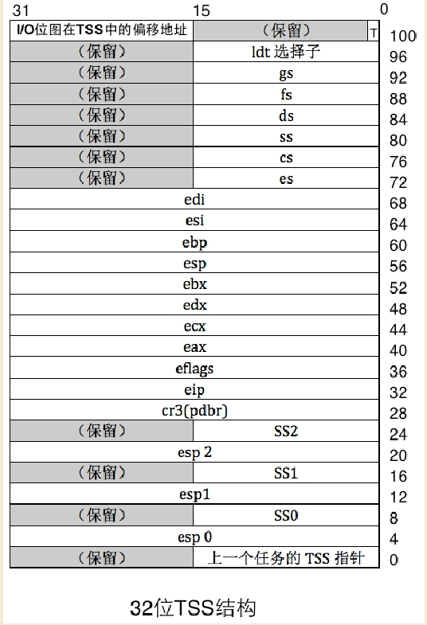
处理器在不同的特权级下使用不同的段。TSS只有3个栈：
- SS0–esp0:0级段选择子和偏移量
- SS1–esp1
- SS2–esp2
特权级转移分为两类，一类是由中断门、调用门等手段实现低特权级转向高特权级，另一类则相反，是由调用返回指令从高特权级返回到低特权级，
TSS记录的栈是转移后的高特权级目标栈，所以不需要记录3级特权级的栈。正常情况下，特权级由低向高转移在先，高向低返回在后。当处理器由低向高特权级转移时，它自动地把当时低特权级的栈地址（SS和ESP）压入了转移后的高特权级所在的栈中。
TSS是硬件支持的系统数据结构，由TR寄存器（task register）加载。
CPL和DPL
基本概念：
- DPL：段描述符特权级，表示代码段的特权级
- RPL：全局描述符表的段寄存器的低2位，即段选择子的0-1位，也是请求特权级
- CPL：Current Privilege level，当前CPU的特权级，保存在CS选择子中的RPL部分
处理器在访问者访问受访者时进行特权检查，访问者的特权就是当前特权级CPL。访问者任何时候都不允许访问比自己特权更高的资源，对于受访者是数据段来说，只有比他高或者平级才能访问，但是对于受访者是代码段来说，只能平级访问。唯一一种处理器会从高特权级降到低特权运行的情况：处理器从中断处理程序中返回到用户态中。
一致性代码段
可以执行高特权级代码段上的指令又不提升特权级，也叫依从代码段，如果自己是转移后的代码段，自己的特权级DPL一定要大于转移前的CPL。
特权级检查发生在访问者访问受访者的一瞬间，只检查一次，所有的数据段是非一致的，即数据段不允许比本数据段特权级更低的代码段访问。
调用门
处理器只有通过门结构才能由低特权级转到高特权级，门就是记录一段程序起始地址的描述符。
四种门：
- 任务门：call、jmp
- 中断门：int
- 陷阱门：int3
- 调用门：call向高，平特权级转移、jmp平级
除任务门外，其他三种门都是对应一段例程即一段函数，而不是内存区域。中断门和陷阱门仅位于IDT（中断描述符表）中，任务门可以位于GDT、LDT、IDT，调用门位于GDT、LDT，无论哪种门，他们记录的信息都已经可以确定所描述的对象
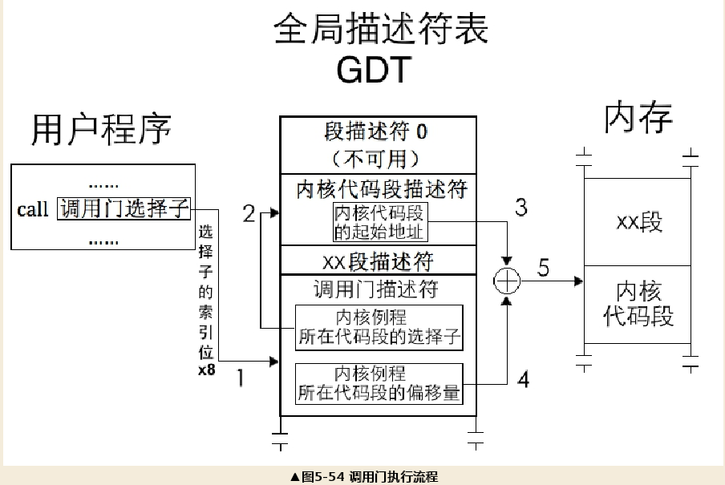
特权级检查：32位保护模式下对内存的访问要通过段描述符，段描述符中有DPL，处理器的特权检查，都只发生在往段寄存器中加载选择子访问描述符的那一瞬间。
对于受访者是代码段时：
如果目标为非一致性代码段，要求：
数值上CPL=RPL=目标代码段DPL
如果目标为一致性代码段，要求：
数值上（CPL≥目标代码段DPL && RPL≥目标代码段DPL）
对于受访者为数据段时：
数值上（CPL ≤目标数据段DPL && RPL ≤ 目标数据段DPL）
栈的特权级要和CPL相同，所以往段寄存器SS中赋予数据段选择子时，处理器要求CPL等于栈段选择子对应的数据段的DPL，即数值上CPL = RPL = 用作栈的目标数据段DPL。
进入0特权级后，CPL是指代理人，即内核，RPL则有可能是委托者，即用户程序，也有可能是内核自己。
调用门本身是个描述符，所以它有一个DPL，记作DPL_GATE，下限，程序所在的代码段本身也有DPL，记作DPL_CODE，上限，调用门会涉及这两个DPL的特权检查。
对于门来说，处理器在检查特权级时：
（1）要求CPL和RPL在DPL_GATE和DPL_CODE之间。
（2）RPL只用在进调用门时和DPL_GATE比较一次，不参与和DPL_CODE比较。
门描述符中选择子的RPL不参与特权级检查，选择子仅仅是用来指向目标程序所在的代码段的。
看不下去了
后面略，看的头都大了，出去锻炼。
脚本：
1
2
3
4
5
6
7
8
| #!/bin/bash
nasm -I include/ -o mbr.bin mbr.S && \
nasm -I include/ -o loader.bin loader.S && \
gcc -m32 -c -o ./kernel/main.o ./kernel/main.c && \
ld ./kernel/main.o -N -Ttext=0xc0001500 -e main -m elf_i386 -o ./kernel/kernel.bin && \
dd if=/root/bochs-2.7/mbr.bin of=/root/bochs-2.7/hd60M.img bs=512 count=1 conv=notrunc && \
dd if=/root/bochs-2.7/loader.bin of=/root/bochs-2.7/hd60M.img bs=512 count=4 seek=2 conv=notrunc && \
dd if=/root/bochs-2.7/kernel/kernel.bin of=/root/bochs-2.7/hd60M.img bs=512 count=200 seek=9 conv=notrunc
|
Shell命令行：
1
2
3
4
5
6
7
8
9
| nasm -I include/ -o mbr.bin mbr.S
nasm -I include/ -o loader.bin loader.S
gcc -m32 -c -o ./kernel/main.o ./kernel/main.c
ld ./kernel/main.o -N -Ttext=0xc0001500 -e main -m elf_i386 -o ./kernel/kernel.bin
dd if=/root/bochs-2.7/mbr.bin of=/root/bochs-2.7/hd60M.img bs=512 count=1 conv=notrunc
dd if=/root/bochs-2.7/loader.bin of=/root/bochs-2.7/hd60M.img bs=512 count=4 seek=2 conv=notrunc
dd if=/root/bochs-2.7/kernel/kernel.bin of=/root/bochs-2.7/hd60M.img bs=512 count=200 seek=9 conv=notrunc
|